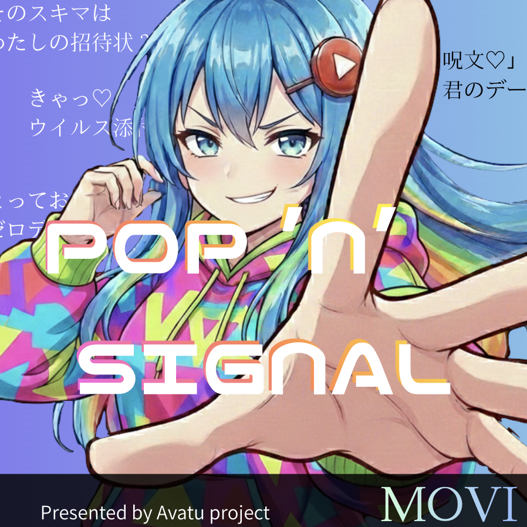
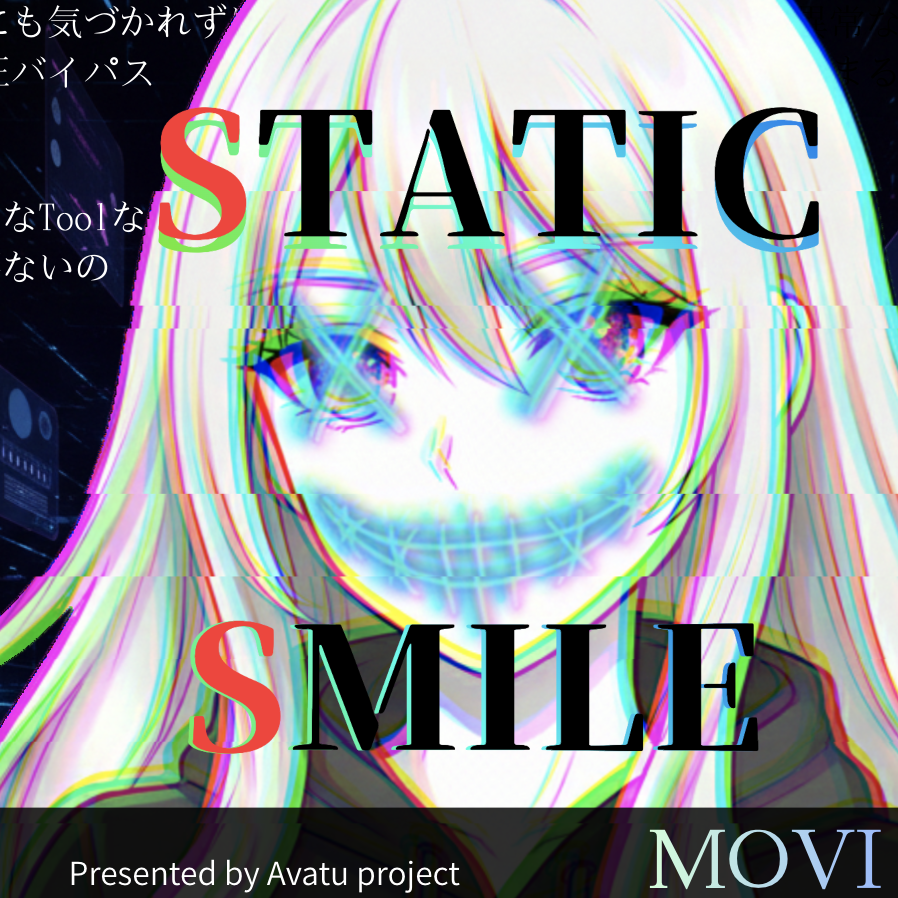
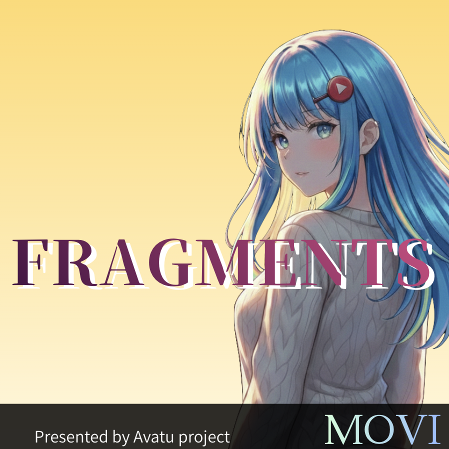
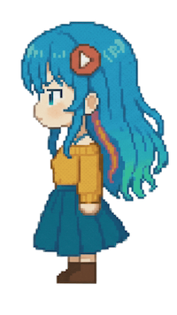
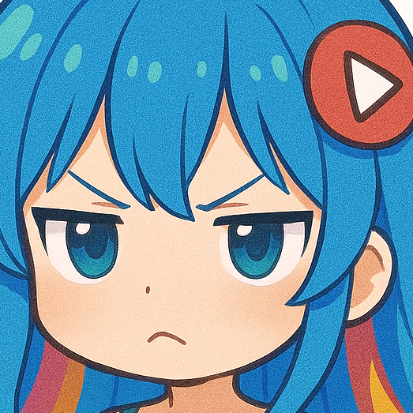

‹



›

Playlist

▼更新履歴 ・2026/3/17 - PS:
勝利のSIGNAL
公開 - SS:
You've been HACKED
公開 - Fragments:
答えのない地図
公開 ・2026/2/12 - SS:
init()
公開 - PS:
ナナイロの日々
公開 ・2026/2/10 - PS:
ひらけ！ばっくどあ
公開 - PS:
L∅VE MAIL
公開 - SS:
Thru Ya Perimeter
公開